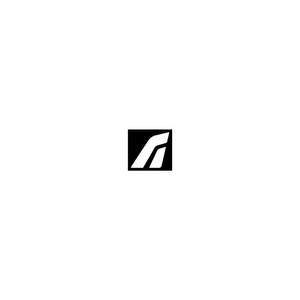

Trade Mark Journal No.2025/016 18 April 2025
UK00004183728 3 April 2025 (9,12,18,25)

- Class 9
- Transformers [electricity]; Electric plugs; Sports glasses; Portable power chargers; Battery packs; Transformers; Helmets for bicycles; Headgear being protective helmets; Battery chargers.
- Class 12
- Frames, for luggage carriers, for bicycles; Luggage racks for bicycles; Panniers adapted for bicycles; Rack trunk bags for bicycles; Bicycle mudguards; Bicycle pedals; Bicycle pumps; Bicycle saddles; Bicycle seat posts; Bicycle water bottle cages; Baskets adapted for bicycles; Saddles for bicycles; Saddlebags adapted for bicycles; Pumps for bicycle tyres; Bicycle bells; Bags [panniers] for bicycles; Bike bags; Bicycle handlebars; Handle bar stems [bicycle parts]; Fittings for bicycles for carrying luggage; Fittings for bicycles for carrying beverages; Luggage carriers for vehicles.
- Class 18
- Rucksacks; Waterproof bags; Kit bags; Fanny packs; Belt bags; Articles of luggage; Backpacks; Bags; Luggage, bags, wallets and other carriers.
- Class 25
- Gloves for cyclists; Gloves; Shoes; Cycling shoes; Clothing for cycling; Socks; Sports socks; Overshoes; Windproof clothing; Footwear; Headgear; Sportswear; Cycling gloves; Sleeveless jerseys; Bib shorts; Bib tights; Shorts; Underclothes; Coats; Gilets; Body warmers; Neck warmers; Leg warmers; Ear warmers; Baseball caps; Hats; Peaked caps; Beanies; Bandanas; Clothing; Cyclists' clothing; Cycling tops; Cycling shorts; Cycling pants; Cycling caps; Undergarments; Arm warmers [clothing].
Tailfin Ltd
Representative: Trama Legal s.r.o.